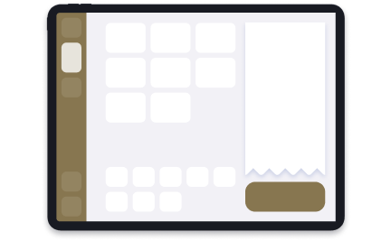

<section class="header">
    <div class="header__top">
        <div class="header__item header__clock">
            <span class="header__clock-week">星期一</span>
            <span class="header__clock-date">8/15</span>
            <span class="header__clock-time">11:24 pm</span>
        </div>
        <div class="header__item header__eatin">
            <a class="header__item-head" onclick="window.location.href='menu.html'">
                <i class="fa-solid fa-chair fa-xl"></i>
                <span>內用</span>
            </a>
            <a class="header__item-action" onclick="popTable()"> <!-- Auto hide when active -->
                <span>桌號2</span>
            </a>
        </div>
        <div class="header__item header__takeout">
            <a class="header__item-head">
                <i class="fa-solid fa-bag-shopping fa-xl"></i>
                <span>外帶</span>
            </a>
        </div>
    </div>
    <div class="header__bottom">
        <div class="header__item header__orders">
            <a class="header__item-head" onclick="window.location.href='orders.html'">
                <i class="fa-solid fa-clipboard-list fa-xl"></i>
                <span>訂單</span>
            </a>
            <!-- Auto hide when active -->
            <!-- <a class="header__item-action">
                <span>平台 x1</span>
            </a> -->
        </div>
        <div class="header__item">
            <a class="header__item-head" onclick="popMore()">
                <i class="fa-solid fa-bars-staggered fa-xl"></i>
                <span>更多</span>
            </a>
        </div>
    </div>
</section>

<!-- 桌號popup -->
<section id="pop__table" class="pop pop--center pop__table" onclick="popClose(this)">
    <div class="pop__body">
        <span class="pop__title">桌號</span>
        <div class="table-no">
            <a>1</a><a class="active">2</a><a>3</a><a>4</a><a>5</a><a>6</a><a>7</a><a>8</a><a>9</a><a>10</a>
            <a>11</a><a>12</a><a>13</a><a>14</a><a>15</a>
        </div>
        <div class="pop__actions">
            <button class="pop__action pop__action--minor" onclick="popClose(this)">
                <i class="fa-solid fa-xmark fa-xl"></i>
            </button>
            <button class="pop__action" onclick="popClose(this)">
                <span>確認桌號</span>
                <i class="fa-solid fa-arrow-right fa-xl"></i>
            </button>
        </div>
    </div>
</section>

<!-- 更多選單popup -->
<section id="pop__more" class="pop pop__more" onclick="popMoreClose(this)">
    <div class="pop__body">
        <a class="more__action more__action--minor" onclick="popMoreClose(this)">
            <i class="fa-solid fa-chevron-left fa-xl"></i>
            <span>收起</span>
        </a>
        <a class="more__action">
            <i class="fa-solid fa-cash-register fa-xl"></i>
            <span>收銀</span>
        </a>
        <a class="more__action">
            <i class="fa-solid fa-address-card fa-xl"></i>
            <span>會員</span>
        </a>
        <a class="more__action">
            <i class="fa-solid fa-chart-pie fa-xl"></i>
            <span>報表</span>
        </a>
        <a class="more__action">
            <i class="fa-solid fa-user-gear fa-xl"></i>
            <span>權限</span>
        </a>
        <div class="more__gap"></div>
        <a class="more__action">
            <i class="fa-solid fa-maximize fa-xl"></i>
            <span>全螢幕</span>
        </a>
        <a class="more__action" onclick="popLanguage()">
            <i class="fa-solid fa-globe fa-xl"></i>
            <span>語言</span>
        </a>
        <a class="more__action" onclick="popMakeCollections()">
            <i class="icon-cashier"></i>
            <span>收款模式</span>
        </a>
        <a class="more__action" onclick="popLogout()">
            <i class="fa-solid fa-id-card-clip fa-xl"></i>
            <span>陳店員</span>
        </a>
        <a class="more__action more__action--minor">
            <span>200mb/s</span>
            <span>網路速度</span>
        </a>
    </div>
</section>

<!-- 登出popup -->
<section id="pop__logout" class="pop pop--center pop__logout" onclick="popClose(this)">
    <div class="pop__body">
        <span class="pop__title">確定登出帳號？</span>
        <span class="pop__content">帳號 陳店員</span>
        <div class="pop__actions">
            <button class="pop__action pop__action--minor" onclick="popClose(this)">
                <i class="fa-solid fa-xmark fa-xl"></i>
            </button>
            <button class="pop__action" onclick="window.location.href='index.html'">
                <span>確定登出</span>
                <i class="fa-solid fa-arrow-right fa-xl"></i>
            </button>
        </div>
    </div>
</section>

<!-- 選擇語言popup -->
<section id="pop__language" class="pop pop--center pop__language" onclick="popClose(this)">
    <div class="pop__body">
        <span class="pop__title">Choose language</span>
        <div class="pop__content">
            <div class="language-list">
                <a class="language-list--current">English</a>
                <a>中文</a>
                <a>日本語</a>
            </div>
        </div>
        <div class="pop__actions">
            <button class="pop__action pop__action--minor" onclick="popClose(this)">
                <i class="fa-solid fa-xmark fa-xl"></i>
            </button>
            <button class="pop__action" onclick="window.location.href='index.html'">
                <span>Confirm</span>
                <i class="fa-solid fa-arrow-right fa-xl"></i>
            </button>
        </div>
    </div>
</section>

<!-- 收款模式popup -->
<section id="pop__makecollections" class="pop pop--center pop__makecollections" onclick="popClose(this)">
    <div class="pop__body">
        <span class="pop__title">選擇收款模式</span>
        <div class="pop__content">
            <div class="mc-method">
                <input type="radio" name="mc-method" id="mc-method1">
                <label for="mc-method1">
                    <div class="mc-method__title">
                        <i class="icon-border"></i>
                        <i class="icon-checked fa-solid fa-check"></i>
                        單螢幕 掃碼付款
                        <div class="tooltip">推薦使用！</div>
                    </div>
                    <div class="mc-method__img"></div>
                    <div class="mc-method__desc">一個螢幕<br>
                        點餐 + 收款碼</div>
                </label>
            </div>

            <div class="mc-method">
                <input type="radio" name="mc-method" id="mc-method2">
                <label for="mc-method2">
                    <div class="mc-method__title">
                        <i class="icon-border"></i>
                        <i class="icon-checked fa-solid fa-check"></i>
                        雙螢幕 掃碼付款
                        <div class="tooltip">雙螢幕 更方便！</div>
                    </div>
                    <div class="mc-method__img"></div>
                    <div class="mc-method__desc">兩個螢幕<br>
                        一個點餐 + 一個收款碼<br>
                        <span class="fs">請準備第二台平板/手機進行設定</span></div>
                </label>
            </div>

            <div class="mc-method">
                <input type="radio" name="mc-method" id="mc-method3">
                <label for="mc-method3">
                    <div class="mc-method__title">
                        <i class="icon-border"></i>
                        <i class="icon-checked fa-solid fa-check"></i>
                        關閉 掃碼付款
                    </div>
                    <div class="mc-method__img"></div>
                    <div class="mc-method__desc">一個螢幕<br>
                        點餐 + 線下收款<br>
                        <span class="fs">原iDoo 1.0 收款模式</span></div>
                </label>
            </div>
        </div>
        <div class="pop__actions">
            <button class="pop__action pop__action--minor" onclick="popClose(this)">
                <i class="fa-solid fa-xmark fa-xl"></i>
            </button>
            <button class="pop__action readonly">
                <span>確認</span>
                <i class="fa-solid fa-arrow-right fa-xl"></i>
            </button>
            <button class="pop__action" onclick="popClose(this);popTwoScreenSetting()">
                <span>確認</span>
                <i class="fa-solid fa-arrow-right fa-xl"></i>
            </button>
        </div>
    </div>
</section>

<!-- 收款模式popup2 -->
<section id="pop_twoscreensetting" class="pop pop--center pop__makecollections" onclick="popClose(this)">
    <div class="pop__body">
        <span class="pop__title">雙螢幕設定</span>
        <div class="pop__content flex--center">
            <div class="mc-setting qrcode">
                <div class="mc-setting__qrcode"></div>
                <div class="mc-setting__qrcode__url">
                    <span>www.dqr.com</span>
                    <a><i class="fa-solid fa-copy fa-xl"></i></a>
                </div>
            </div>

            <div class="mc-setting">
                <h2>請使用第二台平板或手機<br>
                    掃描左方QR code完成收款設定</h2>
                <div>或手動輸入左方連結</div>
                
                <div class="mc-setting__box">
                    <div class="mc-setting__switch">
                        <input type="checkbox" name="switch"  id="switch" checked>
                        <label for="switch">
                            <span class="switch__inner"></span>
                            <span class="switch__switch"></span>
                        </label>
                    </div>
                    <div class="mc-setting__caption">
                        <div>開啟安全認證PIN碼？</div>
                        <div class="fs">開啟後每次登入以上連結將需要重新認證</div>
                        <div class="mc-setting__pincode">
                            <span>PIN碼：ASDF</span>
                            <a><i class="fa-solid fa-arrows-rotate"></i></a>
                        </div>
                    </div>
                </div>
            </div>
        </div>
        <div class="pop__actions">
            <button class="pop__action pop__action--minor" onclick="popClose(this)">
                <i class="fa-solid fa-xmark fa-xl"></i>
            </button>
            <button class="pop__action" onclick="popClose(this)">
                <span>確認</span>
                <i class="fa-solid fa-arrow-right fa-xl"></i>
            </button>
        </div>
    </div>
</section>
